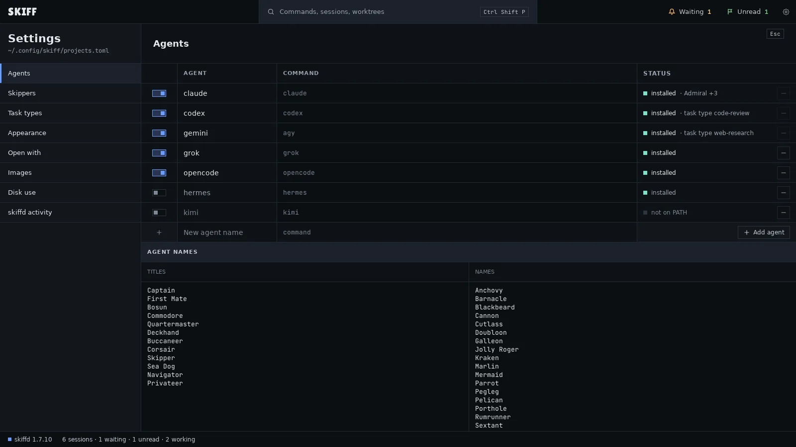
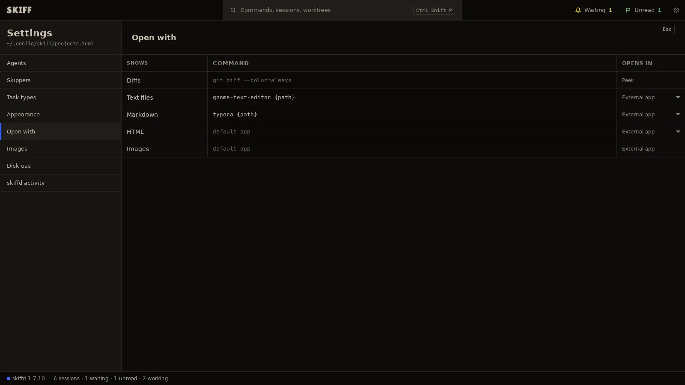
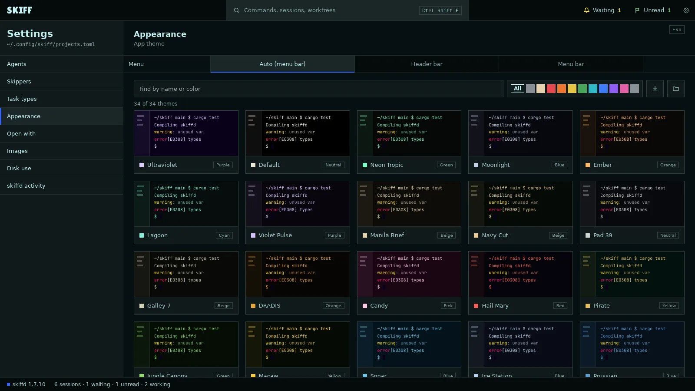
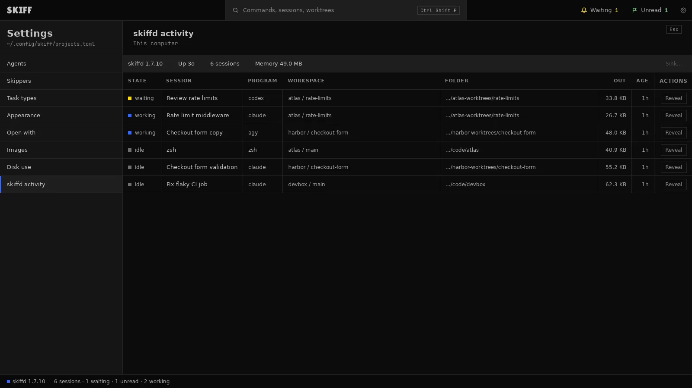
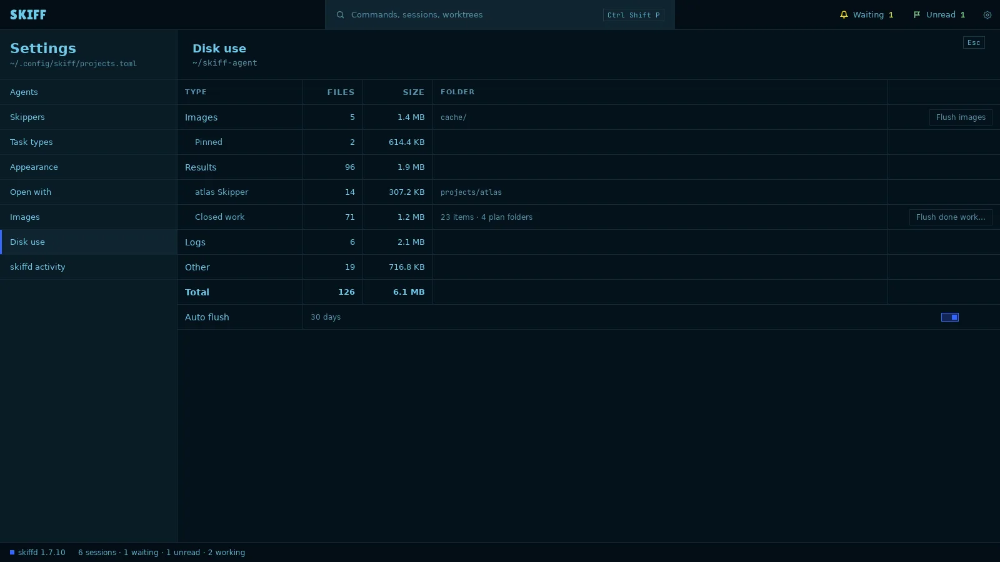
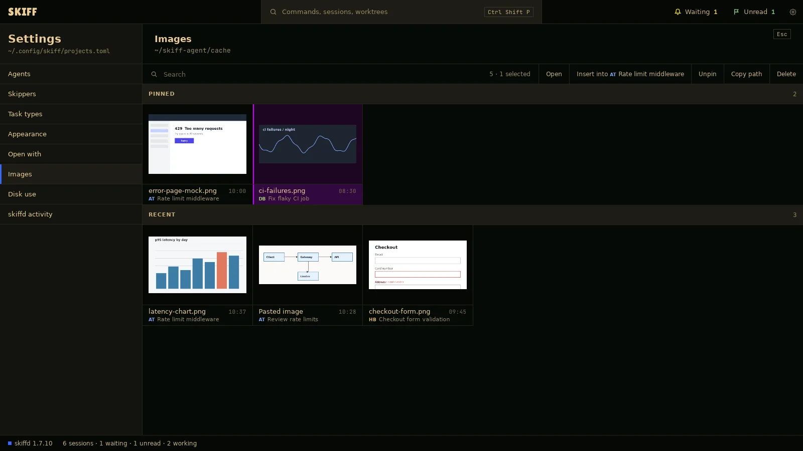

Skiff
SkiffSettings
Settings opens over the window, with its sections in a list on the left. Chapter 1 covered Skippers and Task types. This chapter covers the rest, in the order the list shows them: Agents, Appearance, Open with, Images, Disk use and skiffd activity.
Chapter 9 of 9 · Skiff user guide
Agents
- Open Settings › Agents. Each row is one agent: its switch, its name, its command and its status.
- Click the switch to turn an agent on or off. An agent that is on shows in every launch menu. A switch is off and grey when the command is not on your PATH.
- To run an agent with other options, click its COMMAND cell and type the command. An empty cell uses the default shown in grey.
- To add your own agent, type a name in New agent name and its command, then click Add agent.
- Click − at the right of a row to remove the agent. An agent that Admiral or a task type uses shows that in STATUS and stays. Restore defaults brings back a removed built-in agent.
- Under AGENT NAMES, the two lists are the words Skiff joins into the names of new sessions, such as First Mate Pelican. Edit a list and click away to save it.

Open with
- Open Settings › Open with. Each row names what Skiff hands to another program: Diffs, Text files, Markdown, HTML and Images.
- Type a command in the COMMAND cell and press Enter. Write {path} where the file goes. An empty cell uses the system's default app. The Open with page lists commands for common apps on Linux and macOS.
- Set OPENS IN for text, Markdown and HTML. External app waits for Enter in the peek. Peek runs the command inside the peek at once, for terminal tools. Diffs always use the peek. Images always use an app.

Themes and how to manage them
- Open Settings › Appearance. The cards are the app theme: the side panel, the bars and every pane without a project or session theme. Click a card to apply it.
- Type a name or a color in Find by name or color, or click a swatch, to filter the cards. All clears the filter. The line under the field counts the themes shown.
- Click the import button at the right of the swatches, Import themes…, to add theme files. Skiff reads the foot TOML format and Superset's JSON.
- Click the folder button, Open theme folder, to see the theme files. Drop files in it, come back to Skiff, and the list reads them.
- On Linux, the Menu row picks the window's menu: Auto, Header bar or Menu bar. A change shows the next time Skiff opens.

A project theme or a session theme replaces the app theme in its scope. See chapter 3.
skiffd activity
skiffd is the daemon that owns every session. This page lists what it runs, also sessions that no project shows.
- Open Settings › skiffd activity. The band at the top shows the daemon's version, how long it has run, its session count and its memory.
- Each row is one session: its state, name, program, project and worktree, folder, output so far and age. A row with no project in Skiff is marked.
- Click a column head to sort by it. Click again to reverse.
- Click Reveal to close Settings and show that session. A closed project opens again for it.
- To end sessions, click their rows. Shift+click selects a range, Ctrl+click (⌘ on macOS) adds or drops one row, Ctrl+A selects all. Then click Sink…. The Abandon Ship dialog names the sessions. Confirm to kill them.

Storage usage
- Open Settings › Disk use. The table counts the Skiff agent's folder: Images, with Pinned under it; Results, with a row for each Skipper and Closed work; Logs; Other; and Total.
- Click Flush images to remove every image that is not pinned.
- Click Flush done work… to remove the result files of closed work. The dialog shows the counts first. Open and working work stays, and so do the ledger and the instruction files.
- Auto flush removes images older than 30 days when Skiff starts. Click the switch to turn it off or on. Pinned images stay.

Gallery
- Open Settings › Images, or click Edit › Settings › Images…. The page shows the image library as a gallery: PINNED first, then RECENT, newest first.
- Type in the search field to filter by file name, session or project.
- Click an image to select it. Ctrl+click (⌘ on macOS) selects more. The count at the right of the search field says how many.
- The buttons act on the selection. Open opens the image in its app. Insert into and the session name types the path into the focused pane. Pin or Unpin keeps or releases it. Copy path copies it. Delete removes the file.
